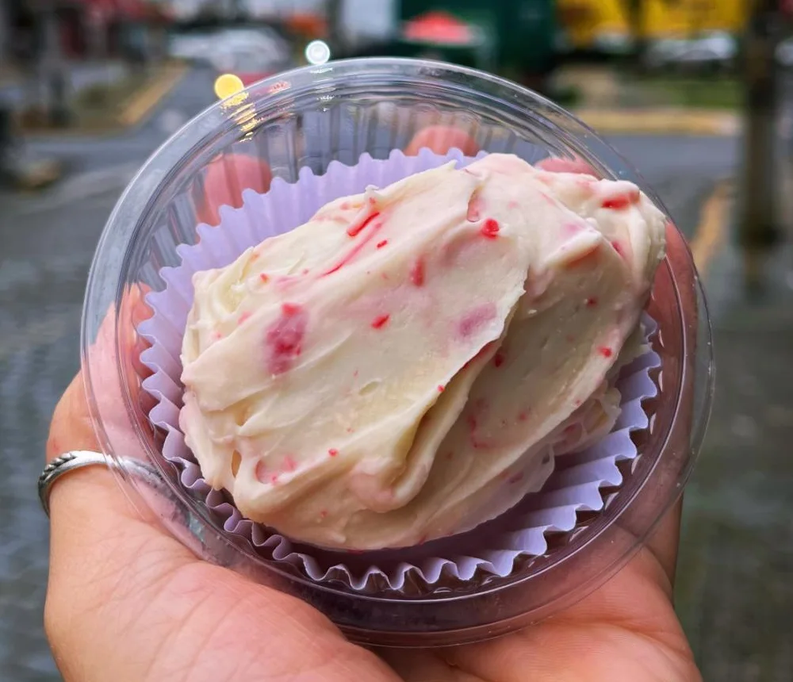
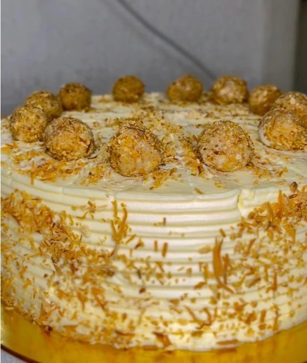
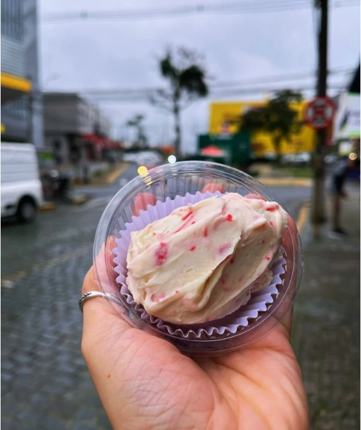
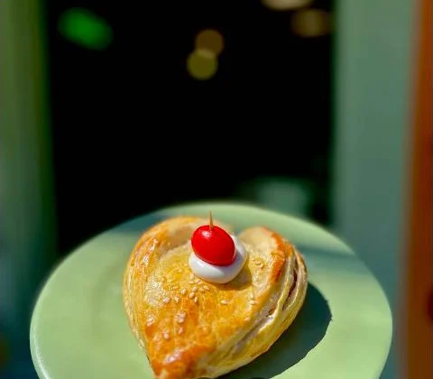
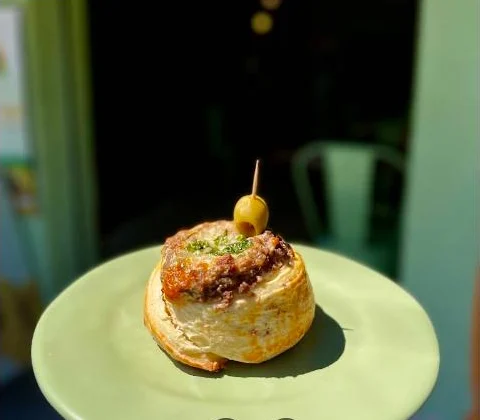
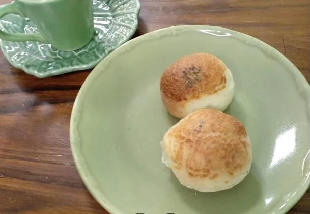
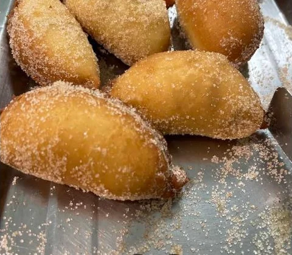
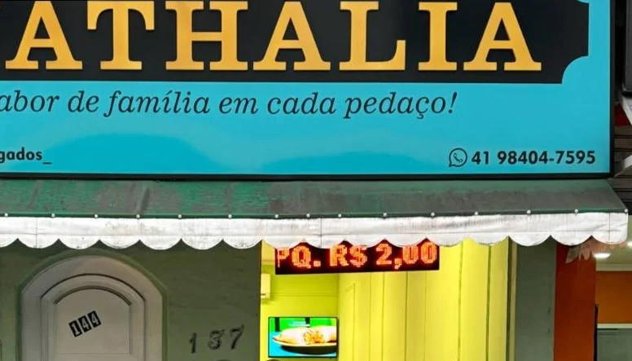

Confira o horário abaixo
Sabor que transforma o simples em especial
Café, doces e salgados artesanais no Centro Histórico de Paranaguá. Para ir sozinho, em família ou com amigos.
4,8 de 5 no Google, com 40 avaliações
Um lugar aconchegante, feito com sabor de família
Quem visita destaca o ambiente acolhedor e o atendimento. A Nathália Salgados fica na Rua Marechal Alberto de Abreu, no Centro Histórico, e serve no local ou entrega no seu endereço.
Salgados e tortas
Assados, fritos, pastel feito na hora e torta salgada.
Doces e bolos
Bolos, doces gourmet, bolos no pote e o pão do céu, toda terça e quinta.
Café e sucos
Café da manhã e o suco de maracujá que combina com a torta salgada.


Direto do balcão




O que você encontra por aqui
Salgados
- Assados
- Fritos
- Pastel frito na hora
- Torta salgadaCombina com o suco de maracujá
Doces
- Bolos
- Doces gourmet
- Bolos no pote
- Pão do céuToda terça e quinta
Café
- Café da manhã e café da tardeConsulte as opções do dia no WhatsApp
Sucos
- Suco de maracujá
Os preços variam conforme o item e são confirmados no WhatsApp. No Google, a faixa é de R$ 20 a R$ 40 por pessoa.
Kits festa sob encomenda
Aniversário, reunião de família ou café da empresa: monte o kit do seu jeito com salgados, doces e bolo. Conte a data e o número de pessoas e a Nathália responde com as opções.
Encomendar kit festaO que os clientes dizem
O ambiente é aconchegante e agrada tanto quem vem sozinho quanto em família ou com amigos.
O suco de maracujá com a torta salgada é a combinação que mais aparece nos elogios.
O atendimento é lembrado como atencioso e o sabor, como de comida de casa.
Dúvidas frequentes
Onde fica a Nathália Salgados?
Na Rua Marechal Alberto de Abreu, 137, no Centro Histórico de Paranaguá (PR), CEP 83203-240.
Qual o horário de funcionamento?
De segunda a sexta, das 7h30 às 18h. Aos sábados, das 7h30 às 15h. Aos domingos fica fechado.
Vocês fazem encomenda de kit festa?
Sim. Chame no WhatsApp (41) 98404-7595 com a data, o número de pessoas e o que você quer servir.
Tem entrega?
Sim, além de atender no local. Para pedidos, fale no WhatsApp (41) 98404-7595.
Quanto custa em média?
No Google, a faixa informada é de R$ 20 a R$ 40 por pessoa. Os preços de cada item são confirmados no WhatsApp.
Venha tomar um café
Rua Marechal Alberto de Abreu, 137
Centro Histórico, Paranaguá, PR
CEP 83203-240
- Segunda a sexta7h30 às 18h
- Sábado7h30 às 15h
- DomingoFechado
